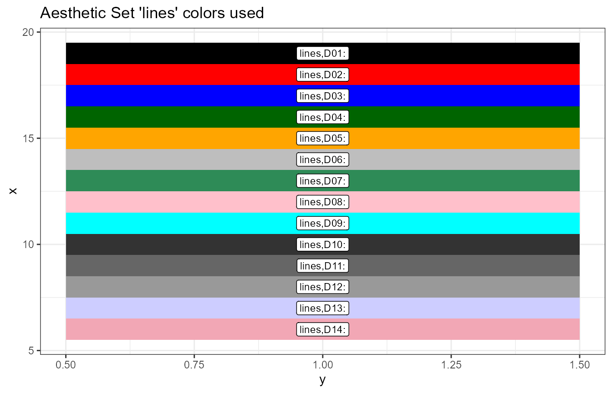
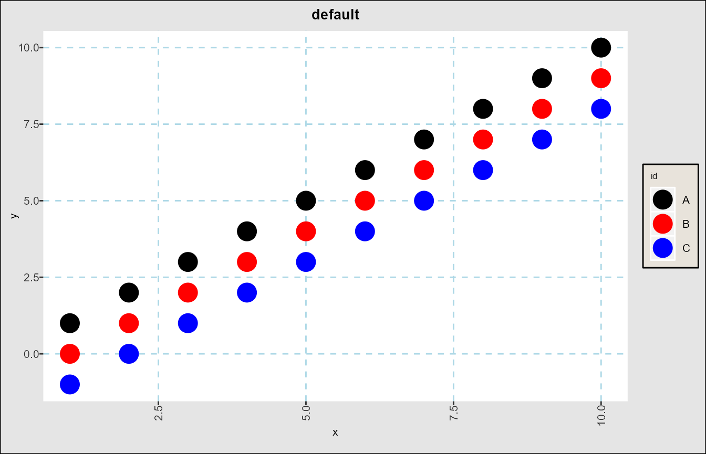
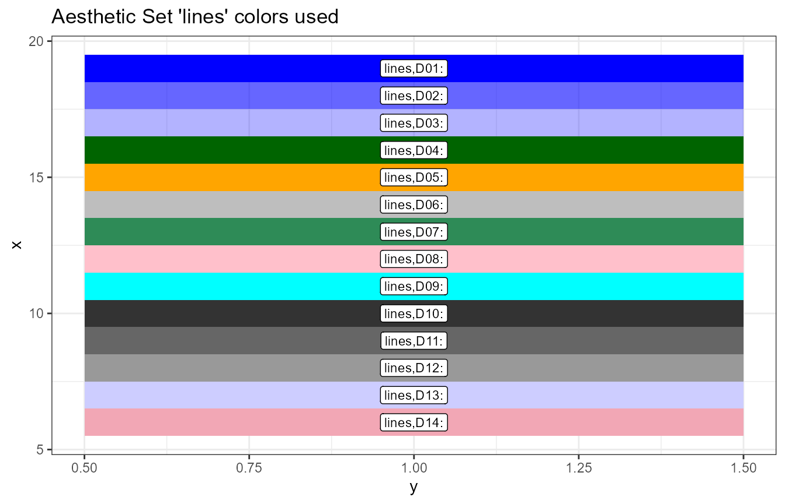
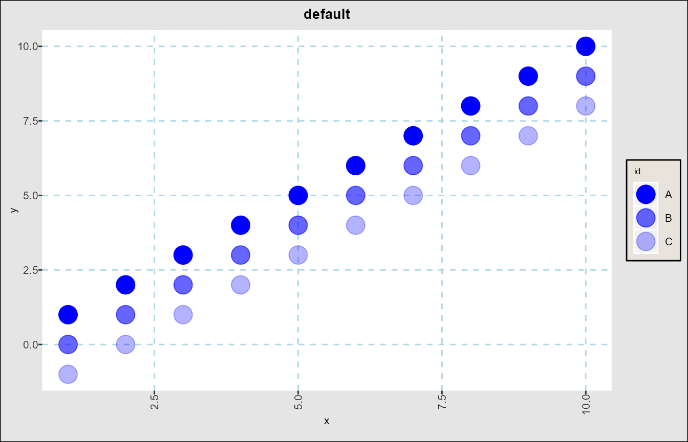
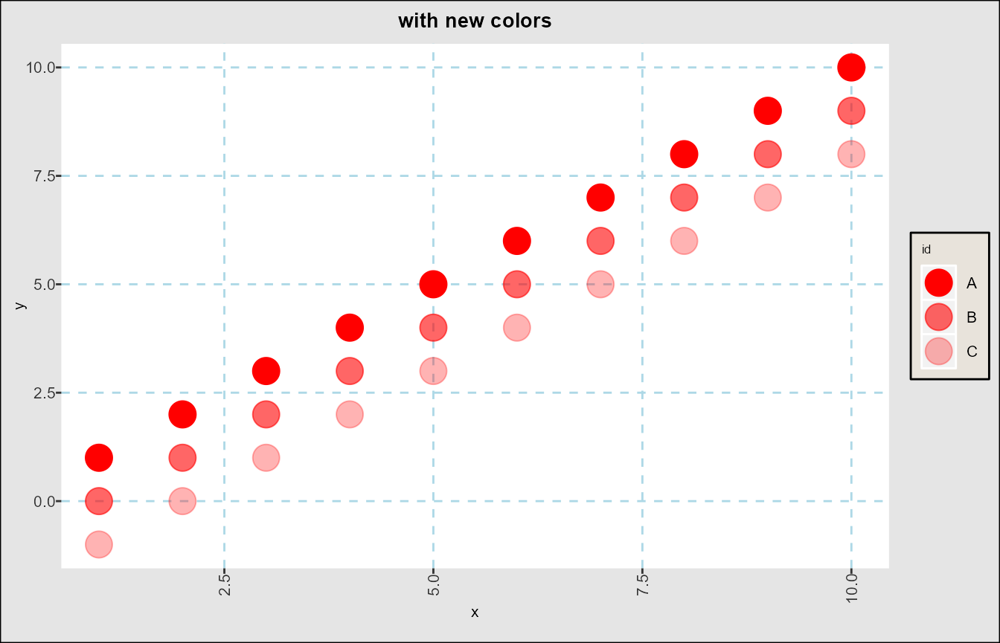
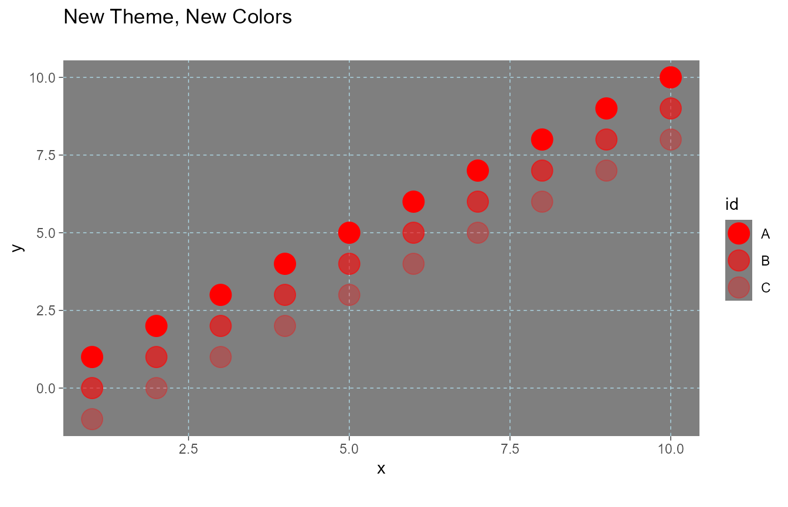
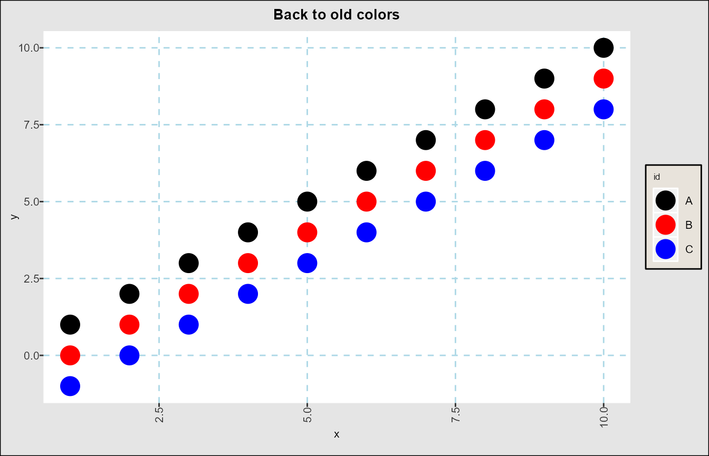

vignettes/FinanceGraphs-customization.Rmd
FinanceGraphs-customization.Rmd
suppressPackageStartupMessages(require(dplyr))
suppressPackageStartupMessages(require(data.table))
suppressPackageStartupMessages(require(ggplot2))
suppressPackageStartupMessages(require(FinanceGraphs))Managing a consistent look across graphs is not easy, as there are so many parameters that are possible to change. ggplot2 does a great job allowing every detail to be customized, especially with the use of themes. However, adding all those customizations are burdensome, and ad-hoc changes to them can involve a great deal of programming. Ideally, we would like to keep our favorite looks in one place with an easy ability to change just a few pieces in an ad-hoc manner.
The functions in the package attempt to ease that burden with a
middle layer of named aesthetic groups. Aesthetics can be
managed just like any other data, so internal to the package is a
data.table with the following character columns, plus a few
others:
| Column | Description |
|---|---|
| Category | An “aesthetic set” key grouping together various subparts of a graph. |
| (Ordering) Variable | Any string that can sorted to keep the aesthetics in a desired order |
| Type | The type of aesthetic (e.g. color, size, symbol, etc) |
| Value | The actual aesthetic to be used. If a number, then each function casts appropriately |
| used | Where the function is used |
Each FinanceGraphs function has internal aesthetic names (and
defaults) that a user can modify, either persistently or temporarily.
For example, the basic set of colors for categories is
"lines", which are the line colors for
fgts_dygraph() or the category colors for
fg_scatplot.
fg_get_aes("lines", n_max=6)
#> category variable type value const used helpstr
#> 1: lines D01 color black all Low cardinality line colors
#> 2: lines D02 color red all Low cardinality line colors
#> 3: lines D03 color blue all Low cardinality line colors
#> 4: lines D04 color darkgreen all Low cardinality line colors
#> 5: lines D05 color orange all Low cardinality line colors
#> 6: lines D06 color gray all Low cardinality line colorsChanging the look of graphs is as easy as changing the values in that
internal dataset. In some cases (e.g. in fg_scatplot()) a
user can make an entire new aesthetic set with a new (unique) name and
directly specify it in the function call. The package keeps those
changes persistently (by default), so each users’ preferences should
only need to be specified once.
There are two ways to get the aesthetic sets for every graph in the package:
fg_print_aes_list() with the name of
a function as an argumentfg_verbose() to turn on logging of
what aesthetic sets are called for any given graph generated.For example, here are the a few aesthetic sets for
fg_eventStudy(). This function just produces a summary, so
for example there are actually 14 different line colors in
"lines".
print(fg_print_aes_list("fg_eventStudy"))
#>
#>
#> |category |helpstr |default | N|
#> |:-----------|:---------------------------|:---------|--:|
#> |lines |Low cardinality line colors |black | 14|
#> |espath_fill |Fitline fill color |#C2DF23FF | 1|
#> |espath_gp |Brewer colors if used |seq,BuGn | 1|
#> |espath_line |fitline color |#433E85FF | 1|
#> |espath_lm |Fit line color |black | 1|
#> |espath_ls |Line styles per event |84 | 9|
#> |espath_x |Scatterplot x color |gray | 1|
#> |espath_y |Scatterplot y color |darkgreen | 1|Each set can have multiple rows, as in
fg_get_aes("espath_ls", n_max=6)
#> category variable type value const used helpstr
#> 1: espath_ls L01 linestyle 84 fg_eventStudy Line styles per event
#> 2: espath_ls L02 linestyle 8282 fg_eventStudy Line styles per event
#> 3: espath_ls L03 linestyle 8484 fg_eventStudy Line styles per event
#> 4: espath_ls L04 linestyle 22 fg_eventStudy Line styles per event
#> 5: espath_ls L05 linestyle 24 fg_eventStudy Line styles per event
#> 6: espath_ls L06 linestyle 4242 fg_eventStudy Line styles per eventThese correspond directly to ggplot2 aesthetics, such as the linetypes in linetypes. Some other notes:
psize and tsize. So, a text size
value of "6" gets converted to tsize * 6 in
each function."variable" column tells the functions to use
"L01" first, "L02" second, etc. As long as the
key is sortable, consistent and correct values should be used."seq,<colorset>" which generates colors from a Colorbrewer
color set.Colors in particular may be examined using the
fg_display_colors() function as in
fg_display_colors("lines")
Any of the default aethetic sets can be customized across calls to
the functions and invocations of the package using
fg_update_aes() New aesthetics sets can also be added for
those functions (e.g. fg_scatplot()) where different
aesthetic sets can be specified at runtime.
Modifying or adding aesthetics sets is done by creating (or copying
and editing) a data.frame obtained from
fg_get_aes() As a simple example, suppose we have three
related classes of assets, one of which we wish to highlight and the
others are related, but less important. Here is how the default colors
would look:
onedt <- function(offset,category) { data.table(x=seq(1,10),y=seq(1,10)-offset,id=rep(category,10))}
exampledta <- rbind(onedt(0,"A"),onedt(1,"B"),onedt(2,"C"))
fg_scatplot(exampledta,"y ~ x + color:id",title="default",psize=6)
The procedure for changing those colors is as follows:
data.frame using
fg_get_aes()
value
columnfg_update_aes()
head(oldcolors <- fg_get_aes("lines"),3)
#> category variable type value const used helpstr
#> 1: lines D01 color black all Low cardinality line colors
#> 2: lines D02 color red all Low cardinality line colors
#> 3: lines D03 color blue all Low cardinality line colors
oldcolors[c(1,2,3),"value"] <- alpha("blue", c(1,0.6,0.3))
# Note that we still keep "category" as "lines". To add a new set, use a different name.
fg_update_aes( oldcolors )
#> Saved aesthetic updates to C:\Users\DFH\AppData\Local/R/cache/R/FinanceGraphs/fg_aes.RD
fg_display_colors("lines")
fg_scatplot(exampledta,"y ~ x + color:id",title="default",psize=6)
To create our own aesthetics, we use the same procedure, but adding
our own "category":
oldcolors[c(1,2,3),"value"] <- alpha("red", c(1,0.6,0.3))
oldcolors[c(1,2,3),"category"] <- rep("MyNewColors",3)
fg_update_aes( oldcolors )
#> Saved aesthetic updates to C:\Users\DFH\AppData\Local/R/cache/R/FinanceGraphs/fg_aes.RD
fg_scatplot(exampledta,"y ~ x + color:id,MyNewColors",title="with new colors",psize=6)
Themes are the ggplot2
way of proscribing every single aesthetic detail in a graph. This
package uses a default theme derived from theme_bw(), but
it is quite easy to create or modify, and more importantly
save, a custom theme for future use.
To do so, just call fg_replace_theme() as in the
following example:
fg_replace_theme(theme_dark())
#> Saved Default Theme to C:\Users\DFH\AppData\Local/R/cache/R/FinanceGraphs/fg_theme.RD
fg_scatplot(exampledta,"y ~ x + color:id,MyNewColors",title="New Theme, New Colors",psize=6)
This package manages aesthetic changes for you by caching the current
aesthetic sets, themes, and dates of interest in local files, which are
then loaded on package invocation. If you don’t want
save changes, then call fg_update_aes() and
fg_replace_theme() with persist=FALSE
parameters.
To reset all parameters back to the package defaults, run
fg_reset_to_default_state()
fg_reset_to_default_state("all")
#> Removing dates file and reverting to defaults of package
#> Removing Aesthetics file and reverting to defaults of package
#> Removing User-made Themes and reverting to defaults of package
#> Removing cache Directory
#> fg_reset_to_default_state(all) completed
fg_scatplot(exampledta,"y ~ x + color:id",title="Back to old colors",psize=6)